1 つの油圧シリンダーのシミュレーション
このデモでは、Simulink® を使用して油圧シリンダーをモデル化します。 これらのコンセプトは、油圧動作をモデル化する必要のあるさまざまな用途に適用可能です。 同じ基本コンポーネントを使用する 2 つの関連デモ、 4 つのシリンダーのモデルおよび荷重制約を持つ 2 つのシリンダーのモデルを参照してください。
- メモ: これは基本の水力学のデモです。 SimDriveline™ と SimHydraulics® を使用して、水力学や自動車のモデルをより簡単に作成できます。
- SimHydraulics は、Simulink の拡張機能として、水力および制御システムのモデル化およびシミュレーションのツールを備えています。 これを使用すると、接続された油圧コンポーネントと機械コンポーネントを物理ネットワークとして含むマルチドメイン システムを記述できます。
- SimDriveline は、Simulink の拡張機能として、ドライブライン (ドライブトレイン) システムの仕組みのモデル化およびシミュレーションのツールを備えています。 これらのツールには、ギアや回転軸、クラッチなどのコンポーネントに加え、標準のトランスミッション テンプレート、さらにはエンジンやタイヤのモデルが含まれています。
目次
モデルの解析と物理現象
図 1 は、基本モデルの概略ブロック線図を示しています。 ポンプ流量 Q が供給圧 p1 に向けられ、ここから層流 q1ex が漏れて排出されます。 ピストン/シリンダー アセンブリの制御バルブは、可変面積のオリフィスを通る乱流としてモデル化されます。 その流量 q12 によって中間圧力 p2 に達しますが、圧力はその後、アクチュエータ シリンダーにつながるラインで低下します。 シリンダー圧力 p3 により、ピストンはバネ荷重に逆らって動き、位置 x まで動きます。
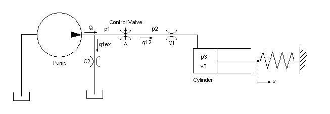
図 1: 基本の油圧システムのの概略ブロック線図
ポンプ出力で、流れは漏れと制御バルブへの流れに分かれます。 漏れ q1ex を層流としてモデル化します (方程式ブロック 1 を参照)。
方程式ブロック 1
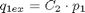
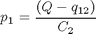
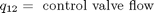
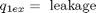
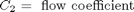
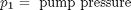
制御バルブを通る乱流を、オリフィスの方程式と共にモデル化しました。 符号関数と絶対値関数は、どちらの方向の流れにも対応します (方程式ブロック 2 を参照)。
方程式ブロック 2
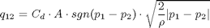
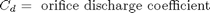
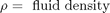
シリンダー内の流体は、この流れ q12 = q23 からピストン運動のコンプライアンスを引いたものによって加圧されます。 この場合の流体圧縮率についてもモデル化しました (方程式ブロック 3 を参照)
方程式ブロック 3
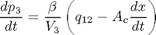
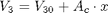
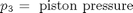
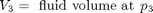

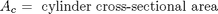
油圧力が大きいため、ピストンとバネの質量は無視しました。 この関係を微分し、p2 ～ p3 の圧力低下を組み込むことにより、方程式系を完成させました。 方程式ブロック 3 では、制御バルブからアクチュエータへのラインにおける層流をモデル化しています。 方程式ブロック 4 では、ピストンでの力平衡が与えられています。
方程式ブロック 4
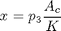
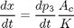
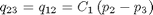
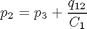
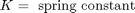
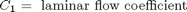
モデル化
図 2 は、モデルの最上位のブロック線図を示しています。 ポンプ流量と制御バルブのオリフィス面積はシミュレーション入力です。 このモデルは、Pump と Valve/Cylinder/Piston/Spring Assembly の 2 つのサブシステムとして体系化されています。
モデルを開いてシミュレーションを実行
このモデルを開くには、MATLAB® 端末で sldemo_hydcyl と入力します (MATLAB ヘルプを使用している場合はハイパーリンクをクリック)。 モデル ツール バーの [再生] ボタンをクリックしてシミュレーションを実行します。
- メモ: 関連データが MATLAB ワークスペースに sldemo_hydcyl_output という構造体でログが作成されます。 ログが作成された信号には青いインジケーターが付きます (モデルを参照)。 信号のログの詳細は、Simulink Help を参照してください。
図 2: 1 つのシリンダーのモデルとシミュレーション結果
Pump サブシステム
Pump マスク サブシステムを右クリックし、[マスク ブロックのモデル表示] を選択してそのコンポーネントを表示します。 供給圧が、ポンプ流量と負荷 (出力) 流量の関数として計算されます (図 3)。 Qpump はポンプ流量データです (モデル ワークスペースに保存されています)。 時間点とそれに対応する流量の列ベクトルを持つ行列 [T, Q] では、流量データが指定されます。 圧力 p1 が方程式ブロック 1 に示したとおり計算されます。Qout = q12 は p1 (制御バルブを介して) の 1 次関数であるため、代数ループが形成されます。 初期値を p10 と推定すると、より効率的な解が得られます。

図 3: Pump サブシステム
ユーザーがパラメーターに簡単にアクセスできるように、Simulink で Pump サブシステムにマスクを付けました (図 4 を参照)。 指定するパラメーターは、T、Q、p10、および C2 です。 次に、マスク ブロックに図 2 のアイコンを割り当て、Simulink ライブラリに保存しました。
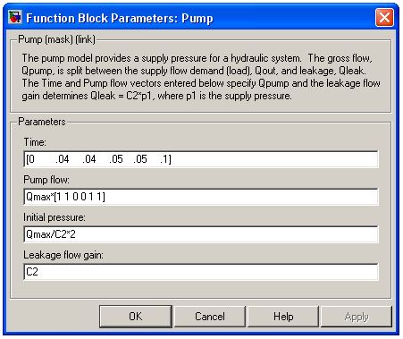
図 4: ポンプのパラメーターの入力
Valve/Cylinder/Piston/Spring Assembly サブシステム
モデルで Valve/Cylinder/Piston/Spring Assembly サブシステムを右クリックし、[マスク ブロックのモデル表示] を選択して Actuator サブシステムを表示します (図 5 を参照)。 連立微分代数方程式により、圧力 p3 でのシリンダーの加圧がモデル化されます。これは、方程式ブロック 3 に導関数として出てきたもので、ステート (積分器) として使用されます。 ピストンの質量を無視する場合、バネの力とピストンの位置は p3 の直接の倍数であり、速度は p3 の時間微係数の直接の倍数です。 後者の関係により、[Beta] Gain ブロックの周りに代数ループが形成されます。 中間圧力 p2 は、p3 と、シリンダーへとつながるバルブからの流量による圧力低下分の合計です (方程式ブロック 4)。 また、この関係により、制御バルブと 1/C1 ゲインを通じて代数的な制約が課せられます。
Control Valve サブシステムでは、オリフィスが計算されます (方程式ブロック 2)。 上流圧力、下流圧力、および可変のオリフィス面積が入力として使用されます。 Control Valve Flow サブシステムにより、符号付き平方根が計算されます。
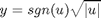
3 つの非線形関数が使用されますが、そのうち 2 つは不連続です。 しかし、組み合わせにより、y は u の連続関数となります。
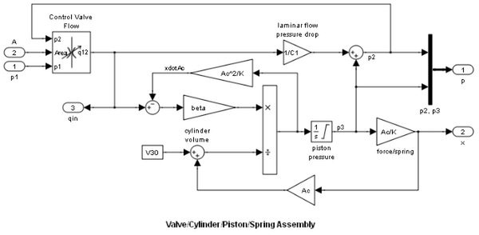図 5: Valve/Cylinder/Piston/Spring サブシステム
結果
シミュレーション パラメーター
以下のデータを使用してこのモデルをシミュレートしました。 この情報は MAT ファイル sldemo_hydcyl_data.mat から読み込まれています。このファイルは、他の 2 種類の油圧シリンダー モデルにも使用されます。 ユーザーは、図 4 および 6 に示した Pump Mask と Cylinder Mask を介してデータを入力できます。
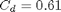
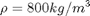
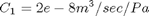
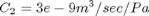
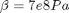
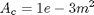
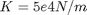
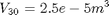
T = [0 0.04 0.04 0.05 0.05 0.1 ] 秒
Q = [0.005 0.005 0 0 0.005 0.005] m^3/ 秒
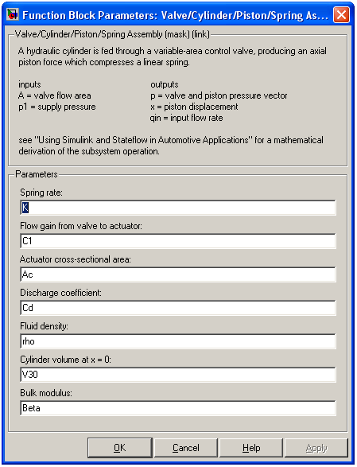
図 6: バルブ/シリンダー/ピストン/バネ アセンブリのパラメーターの入力
シミュレーション結果のプロット
ポンプ流量は最初に 0.005 m^3/sec=300 l/ 分 になり、t=0.04 秒 で突然ゼロになった後、t=0.05 秒 で最初の流量に戻ります。
制御バルブは、ゼロのオリフィス面積から始まり、0.1 秒 のシミュレーション時間中に 1e-4 sq.m. へと一定の割合で増加します。 バルブが閉じられると、ポンプ流量はすべて漏れるため、初期ポンプ圧は p10 = Q/C2 = 1667 kPa に上昇します。
バルブが開くと、圧力 p2 および p3 は上昇しますが、p1 は低下します。これは、図 7 に示した負荷増加への反応です。ポンプ流量が途切れると、バネとピストンがアキュムレーターのような働きをし、p3 は低下し続けます。 次に、流れが逆向きになるため、p2 は、p3 に比較値的近かったものの、突然低下します。 ポンプ本体では、逆流量がすべて漏れ、p1 が急激に低下します。 流れが元に戻ると、これとは逆のことが起こります。
ピストン位置は p3 に正比例し、ここで油圧力とバネの力は釣り合っています。 0.04 秒 と 0.05 秒 での速度の不連続性は、質量が無視できることを示しています。すべてのポンプ流量が再び漏れるようになると、制御バルブ全体で圧力低下がゼロになるため (つまり p3 = p2 = p1 = p10)、モデルは安定状態に達します。
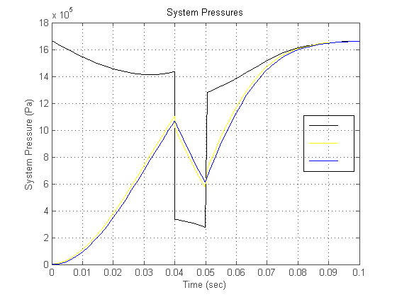図 7: シミュレーション結果 システム圧力
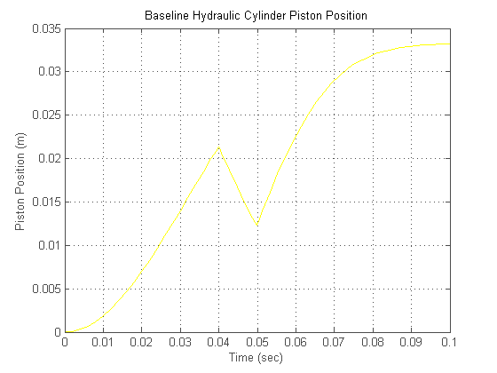図 8: シミュレーション結果 油圧シリンダーのピストン位置
モデルを閉じる
モデルを閉じ、生成されたデータを消去します。